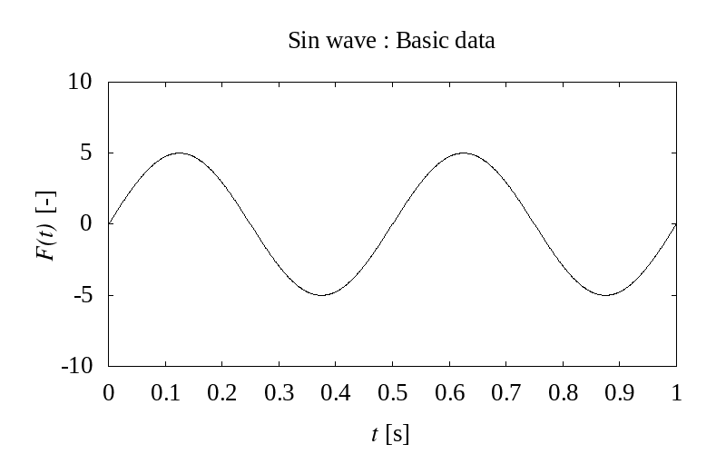
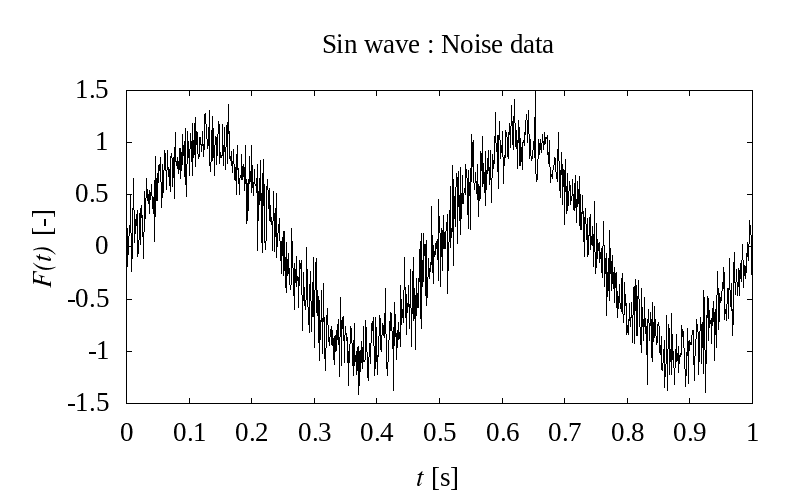

センサ計測データのノイズ処理の話

正弦波（真値）
正弦波を使って色々なノイズ処理方法を試してみる．
| 周波数 | 2.0 | [Hz] |
| 最大振幅 | 1.0 | [-] |

フーリエ変換を使った周波数解析（作成中）
"時間軸"から"周波数軸"に変換する
正弦波を使って色々なノイズ処理方法を試してみる．
| 周波数 | 2.0 | [Hz] |
| 最大振幅 | 1.0 | [-] |
"時間軸"から"周波数軸"に変換する